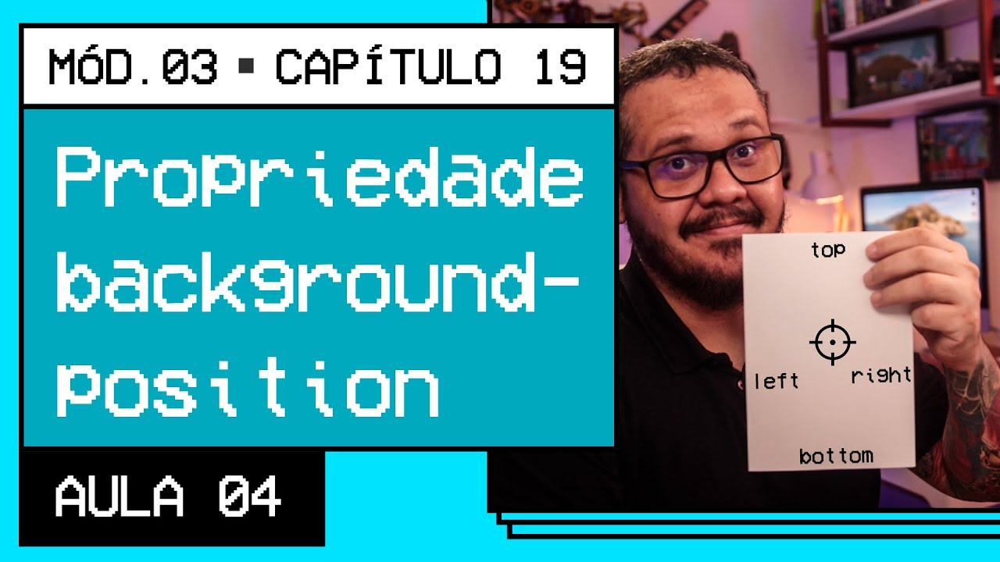

<!DOCTYPE html>
<html lang="pt-br">
<head>
    <meta charset="UTF-8">
    <meta name="viewport" content="width=device-width, initial-scale=1.0">
    <title>Posições dos fundos</title>
    <link rel="shortcut icon" href="favicon.ico" type="image/x-icon">
 
    <style>
        /*div.bloco1 {
            background-image: url('imagens/wallpaper002.jpg');
            height: 200px;
            border: 1px solid black;
            border-radius: 20px;
            margin: 10px;
        }*/
        div.bloco2 {
            background-image: url('imagens/wallpaper003.jpg');
            height: 200px;
            border: 1px solid black;
            border-radius: 20px;
            margin: 10px;
        }
        /*div#q11 {
            background-position: left top;
        }
        div#q21 {
            background-position: left center;
        }
        div#q31 {
            background-position: right bottom;
        }
        div#q41 {
            background-position: center center;
        }*/
        div#q12 {
            background-position: left top;
        }
        div#q22 {
            background-position: left center;
        }
        div#q32 {
            background-position: right bottom;
        }
        div#q42 {
            background-position: center center;
        }
    </style>
</head>
<body>
    <div class="bloco1" id="q11"></div>
    <div class="bloco1" id="q21"></div>
    <div class="bloco1" id="q31"></div>
    <div class="bloco1" id="q41"></div>
    <div class="bloco2" id="q12"></div>
    <div class="bloco2" id="q22"></div>
    <div class="bloco2" id="q32"></div>
    <div class="bloco2" id="q42"></div>
</body>
<footer>
    <!--<a href="https://youtu.be/RpcmGqvzWxQ" target="_blank" rel="external"></a>-->
</footer>
</html>